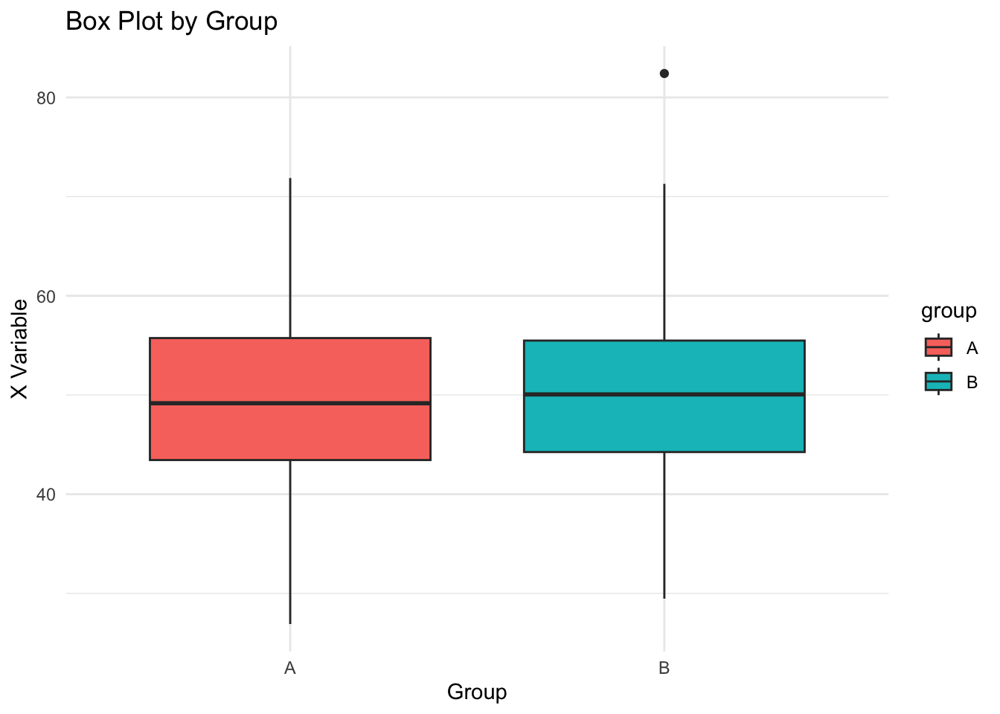

library(ggplot2)
# Generate sample data
set.seed(123)
data_univariate <- data.frame(value = rnorm(1000, mean = 50, sd = 10))
# Plot a histogram with custom settings
ggplot(data_univariate, aes(x = value)) +
geom_histogram(binwidth = 5, color = "black", fill = "skyblue") +
labs(title = "Histogram of Values",
x = "Value",
y = "Frequency")Statistical Computing in R: Comprehensive Review Notebook
Introduction
This notebook is designed to review key elements required for the Stat 250 Final for Dr. Richardson.
Univariate Data
Histogram
This example creates a basic histogram for a variable using ggplot2.
Consider the following
- What do each of the customizations of this histogram do (bin_width, color, fill)
- How do I change the title and axis labels
Density Plot
A density plot provides a smooth estimate of the distribution.
ggplot(data_univariate, aes(x = value)) +
geom_density(fill = "lightgreen", alpha = 0.5,adjust = .5) +
labs(title = "Density Plot of Values",
x = "Value",
y = "Density")
Consider the following
- What do each of the customizations of this plot do (fill, alpha, adjust)
- How do I change the title and axis labels
Overlaying a Theoretical (Normal) Distribution
Overlay a fitted normal curve on a histogram.
# Calculate mean and standard deviation
mean_val <- mean(data_univariate$value)
sd_val <- sd(data_univariate$value)
ggplot(data_univariate, aes(x = value)) +
geom_histogram(aes(y = ..density..), binwidth = 5,
color = "black", fill = "skyblue", alpha = 0.5) +
stat_function(fun = dnorm,
args = list(mean = mean_val,
sd = sd_val),
col = "coral") +
labs(title = "Histogram with Fitted Normal Curve",
x = "Value",
y = "Count")Warning: The dot-dot notation (`..density..`) was deprecated in ggplot2 3.4.0.
ℹ Please use `after_stat(density)` instead.Customizing Plots
Customize the look of a histogram using themes and additional labels.
ggplot(data_univariate, aes(x = value)) +
geom_histogram(binwidth = 5, color = "black", fill = "coral") +
labs(title = "Customized Histogram",
subtitle = "Showing distribution of simulated values",
x = "Simulated Value",
y = "Frequency") +
theme_minimal() +
theme(plot.title = element_text(size = 16, face = "bold"))Consider
- You do not need to memorize every possible customization, but be aware of how to use resources to determine how to modify different elements, like font size, rotating axis labels, etc.
Bivariate Data
Choosing the Right Plot
For bivariate data, the type of plot depends on the variables’ types. For numerical vs. numerical, a scatterplot works best. For numerical vs. categorical, side-by-side boxplots or violin plots are very informative. You should be able to choose which plot to use based on the data types.
Scatterplots
A basic scatterplot for two numeric variables.
set.seed(123)
data_bivariate <- data.frame(
x = rnorm(200, mean = 50, sd = 10),
y = rnorm(200, mean = 30, sd = 5)
)
ggplot(data_bivariate, aes(x = x, y = y)) +
geom_point(color = "blue") +
geom_smooth(span = .7,color = "red") +
labs(title = "Scatterplot of Two Variables",
x = "X Variable",
y = "Y Variable")`geom_smooth()` using method = 'loess' and formula = 'y ~ x'Consider
- How we get the fitted line with shaded interval, and how to adjust the wiggliness
- How to customize the color, shape, size of the scatterplot points
Side by Side Box Plots and Violin Plots
Comparing distributions across groups by plotting boxplots and violin plots.
# Add a grouping variable
set.seed(123)
data_bivariate$group <- sample(c("A", "B"), size = 200, replace = TRUE)
# Box Plot
ggplot(data_bivariate, aes(x = group, y = x, fill = group)) +
geom_boxplot() +
labs(title = "Box Plot by Group",
x = "Group",
y = "X Variable") +
theme_minimal()
# Violin Plot
ggplot(data_bivariate, aes(x = group, y = x, fill = group)) +
geom_violin(trim = FALSE) +
labs(title = "Violin Plot by Group",
x = "Group",
y = "X Variable") +
theme_minimal()
Consider
- How do I flip the orientation
- If there are too many categorical variables, how might I modify my data sat to get a better plot (we’ll do this later)
Side-by-Side Density Plots
This section shows how to create side-by-side density plots where the density curve of a continuous variable is split by an additional categorical variable. This visualization is useful for comparing distributions across groups.
# Create sample data with a grouping variable
set.seed(123)
data_density <- data.frame(
value = c(rnorm(500, mean = 50, sd = 10), rnorm(500, mean = 60, sd = 10)),
group = rep(c("Group A", "Group B"), each = 500)
)
ggplot(data_density, aes(x = value, fill = group)) +
geom_density(alpha = 0.5) +
labs(title = "Overlapping Density Plots by Group",
x = "Value",
y = "Density") +
theme_minimal()Consider
- How might I modify the transparency, color, wiggliness of each.
Bar and Pareto Charts
Visualize categorical data using bar charts and add a Pareto chart to show cumulative percentages.
# Create a categorical data sample
categories <- data.frame(category = rep(LETTERS[1:5], times = c(30, 50, 45, 3, 25)))
# Bar Chart
ggplot(categories, aes(x = category)) +
geom_bar(fill = "steelblue") +
labs(title = "Bar Chart of Categories",
x = "Category",
y = "Count") +
theme_minimal()ggplot(categories, aes(x = fct_infreq(category))) +
geom_bar(fill = "skyblue") +
labs(title = "Pareto Chart",
x = "Category",
y = "Count") +
theme_minimal()Two-Way Tables
Create and display a two-way table using the table1 package.
# Install table1 if necessary
if (!require(table1)) install.packages("table1", repos = "http://cran.rstudio.com/")Loading required package: table1
Attaching package: 'table1'The following objects are masked from 'package:base':
units, units<-library(table1)
# Create sample two-way categorical data
set.seed(123)
data_twoway <- data.frame(
group = sample(c("A", "B"), 100, replace = TRUE),
outcome = sample(c("Success", "Failure"), 100, replace = TRUE)
)
# Generate a summary table by group
table1(~ outcome | group, data = data_twoway)| A (N=57) |
B (N=43) |
Overall (N=100) |
|
|---|---|---|---|
| outcome | |||
| Failure | 31 (54.4%) | 23 (53.5%) | 54 (54.0%) |
| Success | 26 (45.6%) | 20 (46.5%) | 46 (46.0%) |
Multivariate Data
Scatterplots with a Third Feature
Enhance a scatterplot by mapping a third variable (such as a group factor) to color.
set.seed(123)
data_multivariate <- data.frame(
x = rnorm(300, mean = 50, sd = 10),
y = rnorm(300, mean = 30, sd = 5),
category = sample(c("Group 1", "Group 2", "Group 3"), 300, replace = TRUE)
)
ggplot(data_multivariate, aes(x = x, y = y, color = category)) +
geom_point() +
labs(title = "Scatterplot with Third Feature",
x = "X Variable",
y = "Y Variable",
color = "Category") +
theme_minimal()Consider
- How would I instead modify the shape/size.
- What if I wanted a fourth variable also included
- What if the color of the scatterplot points depended on a numeric variable
Facet Wraps
Use faceting to create separate panels for each category.
ggplot(data_multivariate, aes(x = x, y = y)) +
geom_point() +
facet_wrap(~ category) +
labs(title = "Facet Wrap by Category",
x = "X Variable",
y = "Y Variable") +
theme_minimal()Consider
- How might I modify the layout of the facet wrap
- What if there are two variables I want to split the plot by?
Stacked Bar Plots
A stacked bar plot shows the contribution of subgroups within each category.
set.seed(123)
data_stacked <- data.frame(
category = sample(c("A", "B", "C"), 200, replace = TRUE),
subgroup = sample(c("X", "Y"), 200, replace = TRUE)
)
ggplot(data_stacked, aes(x = category, fill = subgroup)) +
geom_bar(position = "stack") +
labs(title = "Stacked Bar Plot",
x = "Category",
y = "Count") +
theme_minimal()Pairs Plots
Examine pairwise relationships among several variables. You can use base R’s pairs or the advanced GGally package.
# Base R pairs plot
pairs(mtcars[, 1:4], main = "Pairs Plot of mtcars Variables")And using the GGally package for an enhanced pairs plot:
if (!require(GGally)) install.packages("GGally", repos = "http://cran.rstudio.com/")Loading required package: GGallyRegistered S3 method overwritten by 'GGally':
method from
+.gg ggplot2library(GGally)
ggpairs(mtcars[, 1:5])- How can I modify the individual compenents of these plots, i.e. color, splitting on an additional category, etc.
Data Operations
This section demonstrates basic data operations using functions like select, filter, mutate, transmute, rename, and slice.
Creating a Sample Data Frame
library(tidyverse)
# Create sample dataset
set.seed(123)
data_ops <- tibble(
id = 1:10,
name = c("Alice", "Bob", "Charlie", "David", "Eva", "Frank", "Grace", "Hannah", "Ian", "Jane"),
score = sample(50:100, 10, replace = TRUE),
age = sample(20:40, 10, replace = TRUE),
height = rnorm(10, 170, 10)
)
data_ops# A tibble: 10 × 5
id name score age height
<int> <chr> <int> <int> <dbl>
1 1 Alice 80 24 150.
2 2 Bob 64 38 177.
3 3 Charlie 100 28 165.
4 4 David 63 22 159.
5 5 Eva 52 27 168.
6 6 Frank 91 26 160.
7 7 Grace 99 29 163.
8 8 Hannah 92 28 164.
9 9 Ian 86 38 153.
10 10 Jane 63 23 178.Example 1: Selecting and Filtering
Select specific columns and filter rows where the score is above 75.
data_ops %>%
select(id, name, score) %>%
filter(score > 75)# A tibble: 6 × 3
id name score
<int> <chr> <int>
1 1 Alice 80
2 3 Charlie 100
3 6 Frank 91
4 7 Grace 99
5 8 Hannah 92
6 9 Ian 86Example 2: Mutating, Transmuting, and Renaming
Add a new variable (score as a percentage), rename a column, and then create a new table using transmute to only return selected variables.
data_ops_mut <- data_ops %>%
mutate(score_percent = score / 100) %>%
rename(student_name = name)
# Using transmute to only include id and score_percent
data_ops_mut %>%
transmute(id, score_percent)# A tibble: 10 × 2
id score_percent
<int> <dbl>
1 1 0.8
2 2 0.64
3 3 1
4 4 0.63
5 5 0.52
6 6 0.91
7 7 0.99
8 8 0.92
9 9 0.86
10 10 0.63Example 3: Slicing Rows
Select a subset of rows, such as the first five rows.
data_ops %>%
slice(1:5)# A tibble: 5 × 5
id name score age height
<int> <chr> <int> <int> <dbl>
1 1 Alice 80 24 150.
2 2 Bob 64 38 177.
3 3 Charlie 100 28 165.
4 4 David 63 22 159.
5 5 Eva 52 27 168.Consider:
- The distinction between
mutate(which retains all columns) andtransmute(which only returns newly created variables). - What if you need to filter by multiple conditions.
- What if column names aren’t valid R variable names
- Advanced consideration with string operations: How you might use helpers such as
starts_with(),ends_with(), orcontains()withselect.
Grouping and Summarizing / Mutating
Grouping data can help derive summary statistics by groups or create group-specific transformations.
Example 1: Grouping and Summarizing
Add a grouping variable and calculate the mean score and age per group.
data_ops_group <- data_ops %>%
mutate(group = sample(c("A", "B"), n(), replace = TRUE))
data_ops_group %>%
group_by(group) %>%
summarize(
avg_score = mean(score),
avg_age = mean(age),
count = n()
)# A tibble: 2 × 4
group avg_score avg_age count
<chr> <dbl> <dbl> <int>
1 A 79.2 24.8 5
2 B 78.8 31.8 5Example 2: Grouping and Mutating
Create a new column that centers the score within each group.
data_ops_group %>%
group_by(group) %>%
mutate(centered_score = score - mean(score))# A tibble: 10 × 7
# Groups: group [2]
id name score age height group centered_score
<int> <chr> <int> <int> <dbl> <chr> <dbl>
1 1 Alice 80 24 150. A 0.800
2 2 Bob 64 38 177. B -14.8
3 3 Charlie 100 28 165. B 21.2
4 4 David 63 22 159. A -16.2
5 5 Eva 52 27 168. B -26.8
6 6 Frank 91 26 160. A 11.8
7 7 Grace 99 29 163. A 19.8
8 8 Hannah 92 28 164. B 13.2
9 9 Ian 86 38 153. B 7.2
10 10 Jane 63 23 178. A -16.2 Consider: - How you might apply functions across multiple columns using across(). - Strategies for grouping by more than one variable.
Working with Dates and Times
Use the lubridate package to effectively manage date and time data.
Example 1: Parsing Dates
Convert character strings into proper Date objects.
library(lubridate)
data_dates <- tibble(
event = c("Event 1", "Event 2", "Event 3"),
date_str = c("2023-01-15", "2022-12-31", "2023-02-20")
)
data_dates <- data_dates %>%
mutate(event_date = ymd(date_str),
Year = year(event_date))
data_dates# A tibble: 3 × 4
event date_str event_date Year
<chr> <chr> <date> <dbl>
1 Event 1 2023-01-15 2023-01-15 2023
2 Event 2 2022-12-31 2022-12-31 2022
3 Event 3 2023-02-20 2023-02-20 2023Example 2: Date Arithmetic
Compute the number of days between events and a reference date.
reference_date <- ymd("2023-01-01")
data_dates %>%
mutate(days_since = as.numeric(event_date - reference_date))# A tibble: 3 × 5
event date_str event_date Year days_since
<chr> <chr> <date> <dbl> <dbl>
1 Event 1 2023-01-15 2023-01-15 2023 14
2 Event 2 2022-12-31 2022-12-31 2022 -1
3 Event 3 2023-02-20 2023-02-20 2023 50Consider: - Other parsing functions like mdy() or dmy() for different date formats.
Working with Factors
Factors are essential for categorical data. We cover recoding, reordering, and lumping for plotting.
Example 1: Reordering and Recoding Factors
Create a factor variable and adjust its levels.
data_factors <- tibble(
category = sample(c("Low", "Medium", "High", "Very High"), 50, replace = TRUE),
value = rnorm(50)
)
data_factors <- data_factors %>%
mutate(category = fct_relevel(category, "Low", "Medium", "High", "Very High"),
category = fct_recode(category,
"Low" = "Low",
"Medium" = "Medium",
"High" = "High",
"VH" = "Very High"))
data_factors# A tibble: 50 × 2
category value
<fct> <dbl>
1 Low 0.585
2 Medium 0.124
3 Low 0.216
4 Low 0.380
5 High -0.502
6 Low -0.333
7 Medium -1.02
8 Low -1.07
9 High 0.304
10 Low 0.448
# ℹ 40 more rowsExample 2: Lumping Factors for Plotting
Reduce the number of factor levels by lumping smaller groups together.
data_factors_extra <- tibble(
category = sample(c("A", "B", "C", "D", "E", "F", "G"), 100, replace = TRUE),
value = rnorm(100)
)
data_factors_extra <- data_factors_extra %>%
mutate(category_lumped = fct_lump(category, n = 4))
library(ggplot2)
p1 <- ggplot(data_factors_extra, aes(x = category)) +
geom_bar(fill = "skyblue") +
labs(title = "Original Categories") +
theme_minimal()
p2 <- ggplot(data_factors_extra, aes(x = category_lumped)) +
geom_bar(fill = "coral") +
labs(title = "Lumped Categories (Top 4)") +
theme_minimal()
print(p1)print(p2)Consider: - How functions like fct_infreq(), fct_rev(), or fct_drop() can further modify factor levels. - The importance of setting factor orders when plotting for more readable graphs. - Using fct_lump_min() or specifying a proportion threshold to control lumping.
Working with Strings
String manipulation is key when cleaning textual data. Below are several examples using the stringr package.
Example 1: Basic String Manipulation
Convert text to lower case and replace specific words.
library(stringr)
data_strings <- tibble(
sentence = c("The quick Brown fox", "jumps OVER the lazy DOG", "Data WRANGLING in R is FUN")
)
data_strings %>%
mutate(
sentence_lower = str_to_lower(sentence),
sentence_clean = str_replace(sentence_lower, "fun", "great")
)# A tibble: 3 × 3
sentence sentence_lower sentence_clean
<chr> <chr> <chr>
1 The quick Brown fox the quick brown fox the quick brown fox
2 jumps OVER the lazy DOG jumps over the lazy dog jumps over the lazy dog
3 Data WRANGLING in R is FUN data wrangling in r is fun data wrangling in r is …Example 2: Extracting and Detecting Patterns
Extract words of a certain length and detect the presence of a pattern.
data_strings %>%
mutate(
extracted = str_extract(sentence, "\\b\\w{5}\\b"),
has_the = str_detect(sentence, regex("the", ignore_case = TRUE))
)# A tibble: 3 × 3
sentence extracted has_the
<chr> <chr> <lgl>
1 The quick Brown fox quick TRUE
2 jumps OVER the lazy DOG jumps TRUE
3 Data WRANGLING in R is FUN <NA> FALSE Example 3: Splitting and Concatenating Strings
Split sentences into words and then concatenate a subset of the split elements.
data_strings %>%
mutate(
split_text = str_split(sentence, " "),
first_two = map_chr(split_text, ~ paste0(.x[1:2], collapse = " "))
)# A tibble: 3 × 3
sentence split_text first_two
<chr> <list> <chr>
1 The quick Brown fox <chr [4]> The quick
2 jumps OVER the lazy DOG <chr [5]> jumps OVER
3 Data WRANGLING in R is FUN <chr [6]> Data WRANGLINGConsider: - Functions such as str_sub(), str_trim(), and str_pad() to further manipulate text. - How to use more complex regular expressions for pattern matching. - Combining multiple string operations to form custom cleaning pipelines.
Joining Data Sets
Combining data from different sources is done via various join functions.
Example 1: Inner Join
Join two datasets by a shared key, keeping only common rows.
df1 <- tibble(
id = 1:5,
value1 = letters[1:5]
)
df2 <- tibble(
id = c(3, 4, 5, 6),
value2 = LETTERS[3:6]
)
inner_join(df1, df2, by = "id")# A tibble: 3 × 3
id value1 value2
<dbl> <chr> <chr>
1 3 c C
2 4 d D
3 5 e E Example 2: Left and Right Joins
Demonstrate a left join (keeping all rows from the first data set) and a right join (keeping all rows from the second).
# Left join: keep all rows from df1
left_join(df1, df2, by = "id")# A tibble: 5 × 3
id value1 value2
<dbl> <chr> <chr>
1 1 a <NA>
2 2 b <NA>
3 3 c C
4 4 d D
5 5 e E # Right join: keep all rows from df2
right_join(df1, df2, by = "id")# A tibble: 4 × 3
id value1 value2
<dbl> <chr> <chr>
1 3 c C
2 4 d D
3 5 e E
4 6 <NA> F Consider: - When to use joins such as full, semi, or anti joins. - How to join on multiple keys by passing a named vector to the by argument. - Strategies for ensuring unique join keys before merging.
Merging / Binding Data Sets
Binding operations let you combine datasets by stacking rows or adding columns.
Example 1: Binding Rows
Stack two datasets vertically.
df_row1 <- tibble(
id = 1:3,
value = c("A", "B", "C")
)
df_row2 <- tibble(
id = 4:6,
value = c("D", "E", "F")
)
bind_rows(df_row1, df_row2)# A tibble: 6 × 2
id value
<int> <chr>
1 1 A
2 2 B
3 3 C
4 4 D
5 5 E
6 6 F Example 2: Binding Columns
Combine two datasets side by side.
df_col1 <- tibble(
id = 1:3,
var1 = c(10, 20, 30)
)
df_col2 <- tibble(
var2 = c("X", "Y", "Z")
)
bind_cols(df_col1, df_col2)# A tibble: 3 × 3
id var1 var2
<int> <dbl> <chr>
1 1 10 X
2 2 20 Y
3 3 30 Z Consider: - The differences between joining (merging on keys) and binding (stacking or combining dimensions). - How mismatches in row or column counts are handled. - Techniques for aligning data frames before binding.
General Cleaning Strategies
Data cleaning involves handling missing values, standardizing formats, and renaming columns.
Example 1: Handling Missing Data
Filter out rows with missing values.
data_clean <- tibble(
id = 1:10,
value = c(5, NA, 7, 8, NA, 6, 5, 7, 8, 9)
)
data_clean %>%
filter(!is.na(value))# A tibble: 8 × 2
id value
<int> <dbl>
1 1 5
2 3 7
3 4 8
4 6 6
5 7 5
6 8 7
7 9 8
8 10 9Example 2: Standardizing Column Names
Use the janitor package to clean and standardize column names.
if (!require(janitor)) install.packages("janitor", repos = "http://cran.rstudio.com/")Loading required package: janitor
Attaching package: 'janitor'The following objects are masked from 'package:stats':
chisq.test, fisher.testlibrary(janitor)
data_clean_names <- tibble(
`ID Number` = 1:5,
`First Name` = c("Alice", "Bob", "Charlie", "David", "Eva"),
`Score (%)` = c(88, 92, 75, 85, 90)
)
data_clean_names %>%
clean_names()# A tibble: 5 × 3
id_number first_name score_percent
<int> <chr> <dbl>
1 1 Alice 88
2 2 Bob 92
3 3 Charlie 75
4 4 David 85
5 5 Eva 90